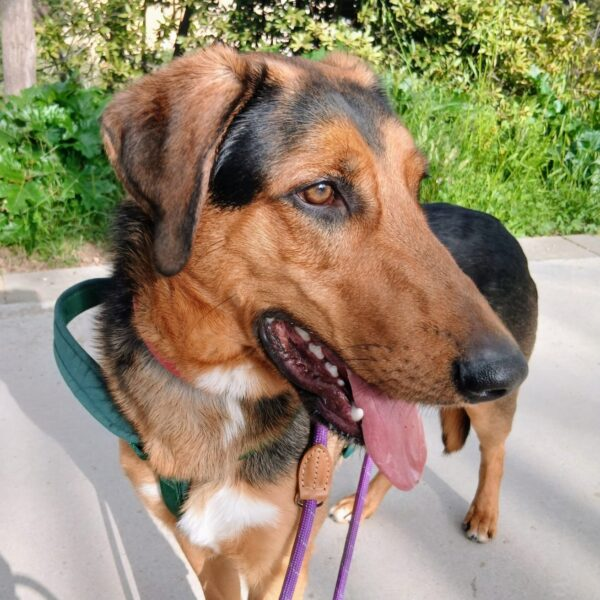

Ells també esperen



Coco és un gos de mida gran que encara no ha complert el seu primer anyet de vida. És jove, ple d'energia i amb tota una vida al davant per donar amor. Va ser rescatat amb els seus germans després d'haver estat abandonats al carrer, fruit d'una ventrada no desitjada. Afortunadament, tots els seus germanets van trobar llar… tots menys ell.
La noia que els va rescatar va fer tot el possible per ajudar-lo, però ja no podia seguir fent-se càrrec, i per això Coco ha vingut a la Lliga, necessita una oportunitat per no quedar-se enrere. És un gos amb molt de potencial, només necessita una família que li doni afecte, paciència i la llar que mai no ha tingut, però s'ha de tenir en compte que és de mida gran i té força. Coco sent un gos tan jove no porta bé viure al refugi, per la qual cosa esperem que la seva oportunitat arribi com més aviat millor.
Coco només necessita aquesta persona especial que li torni l'estabilitat, l'amor i la confiança que va perdre. A canvi, oferirà lleialtat, afecte i una connexió única.